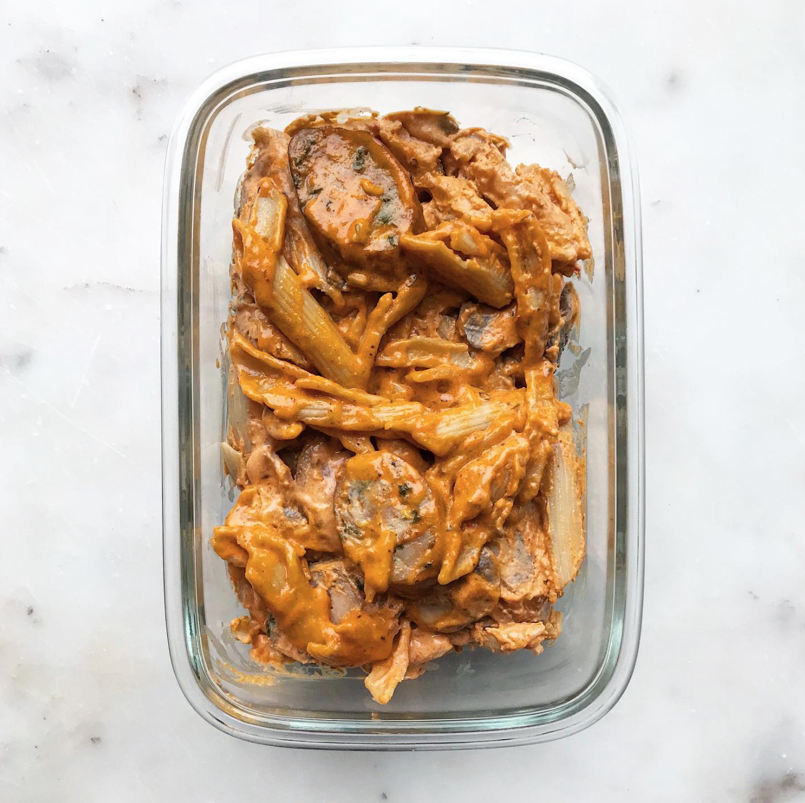

Spicy Cajun Pasta

Description
Ingredients
- 3 chicken sausage links, sliced
- 1 carton baby bella mushrooms, sliced
- 3 cups dry penne pasta
- 1/2 yellow onion, diced
- 2 garlic cloves, minced
- 3/4 cup chicken stock
- 1/4 cup vinegar
- 2 cups heavy cream
- 2 tbsp. tomato sauce
- 1 1/2 tbsp. Cajun seasoning (see recipe)
- 1/2 tsp. chicken bouillon
- 2 tbsp. olive oil